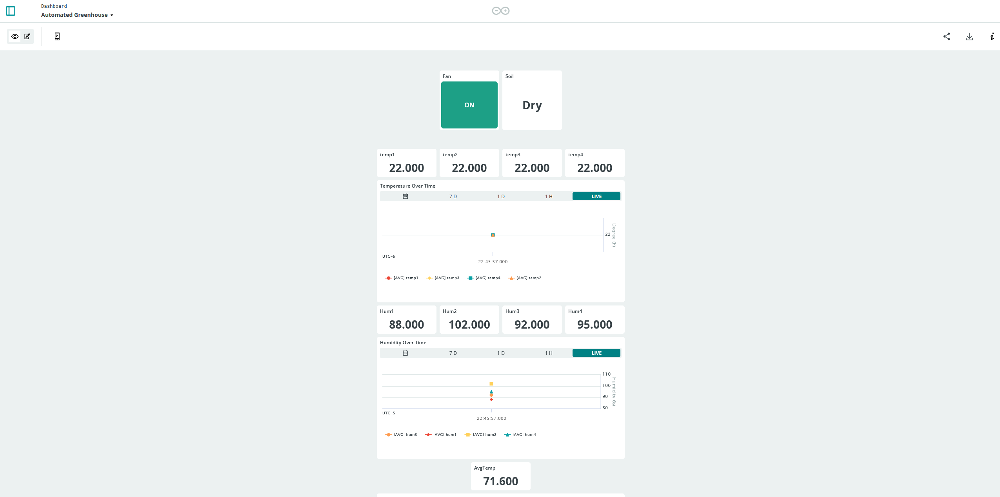
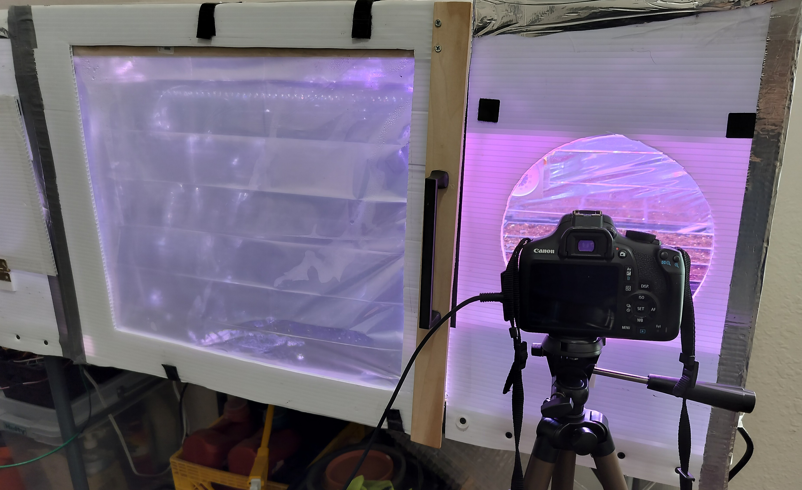
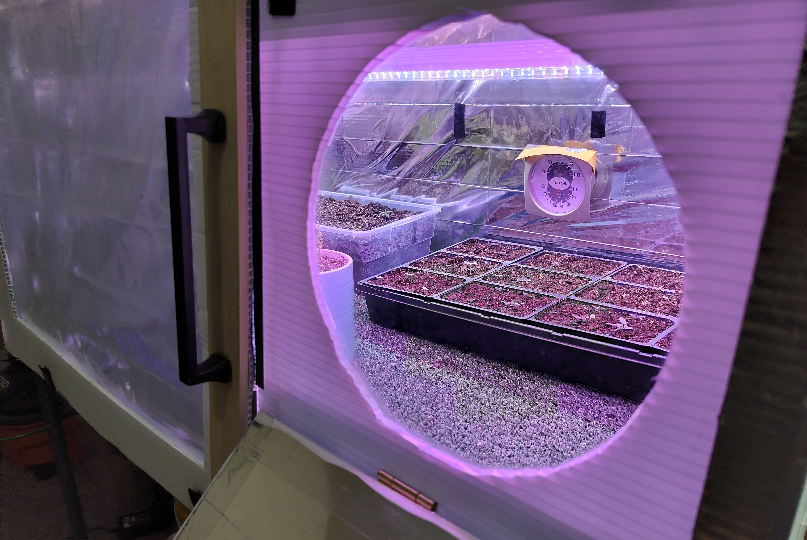
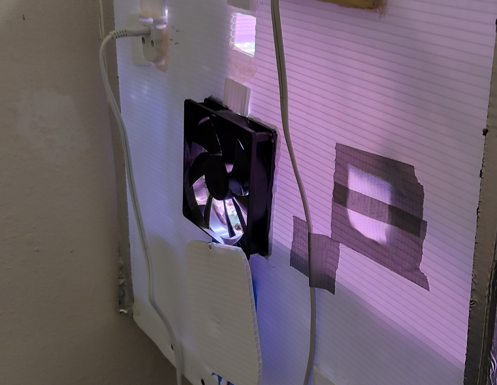
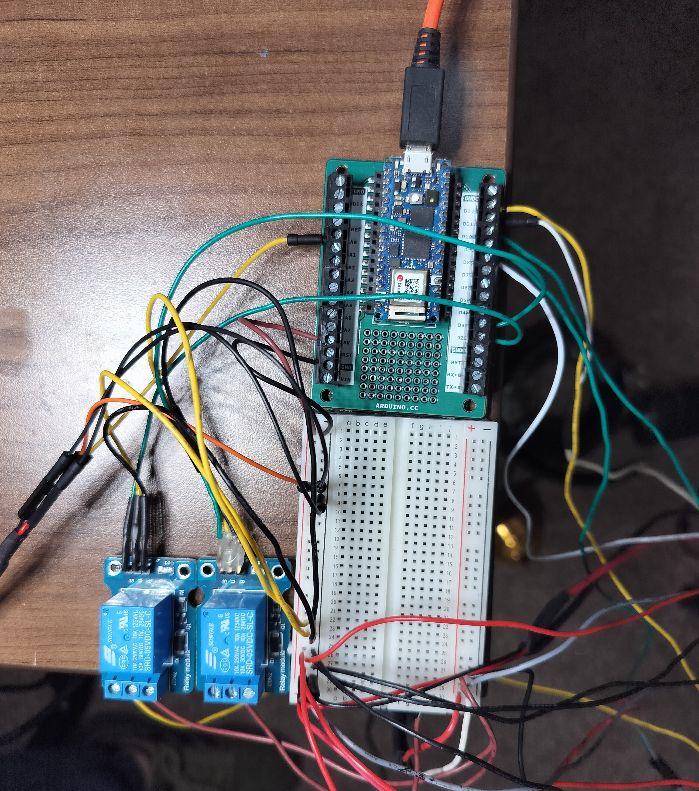

Example Screenshots
This is the Arduino IOT dashboard I have built. When the system is running, it displays live data.
The greenhouse with the main door open.

Camera setup view looking through the window.
What the camera sees through the window. The window has a cover on a hinge when not in use.
The exhaust fan and cover. You can tell this is NOT a proffessional level job... I went through so many iterations which results in the duct tape :)
The RP2040 on a screw terminal. 5v and 12v are powered through DC adapters. Plugged into the breadboard. The blue boxes are the relays. Very much a prototype and experimental.
